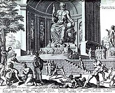
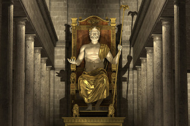
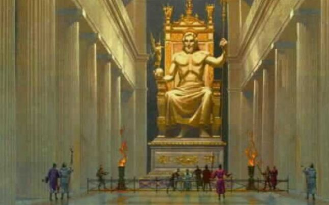
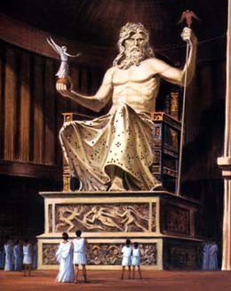

În Grecia continentală (Thessalia), la poalele muntelui Cronion, nu departe de tărmul Marii Ionice, se află Olimpia - așezare vestită în toată lumea helenică nu prin proporțiile sau potențialul ei militar, ci pentru faptul că era principalul centru închinat cultului lui Zeus și locul desfășurării jocurilor olimpice. Șapte drumuri duceau spre Olimpia, între care calea sacră, lungă de zece kilometri, legând țărmul mării de sanctuar - drum lung, străjuit de o parte și de alta de temple, altare, statui. Vreme de peste un mileniu, în perioada desfășurării solemnităților și întrecerilor prilejuite de jocurile olimpice, greci din Europa și Asia Mică, prieteni sau dușmani, uitau rivalitațile și suspendau conflictele, îndreptandu-se spre sanctuarul lui Zeus, încărcați cu daruri, pregătiți să asiste la ceremonii într-un spirit de solidaritate panhelenică.
   
Templul lui Zeus, a cărui construcție a fost terminată în anul 457 î.e.n., avea, după toate probabilitățile, 64 de metri lungime și aproape 28 de metri lățime. Construcția a fost încredințată lui Libon din Eleea, decorarea frontului anterior (reprezentând lupta lui Pelops cu Oenomaos) lui Paconios din Mendes, iar a frontului posterior (lupta centaurilor cu lapiții) lui Alcamenes.